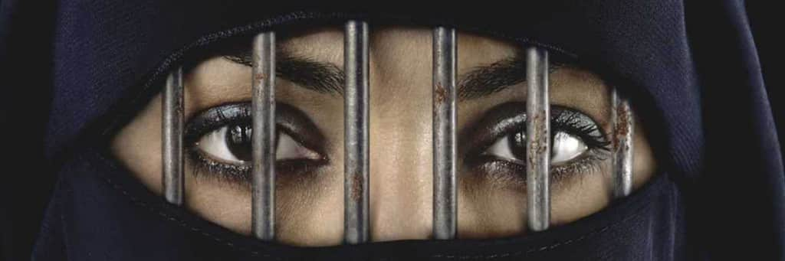

Seja bem vindo a um site de conhecimento

O fundamentalismo é um fenômeno marcadamente moderno. Pode-se dizer que é uma reação às influências da globalização e do pluralismo. A possiblidade de enfraquecimento dos valores tradicionais é intolerável para os fundamentalistas. Em suas comunidades de fé e suas convicções básicas, eles reagem violentamente às crises do mundo moderno. Como medidas de contra-ataque, recusam todos os vetores associados à lógica moderna: a hermenêutica (interpretação dos livros sagrados), o pluralismo, o relativismo (ideia ou fato que depende das condições de meio e de tempo, com as quais varia), a evolução e o desenvolvimento; e reforçam os canais de solidariedade grupal. Todo fundamentalismo vem circundado de uma potencialidade de violência. Há na sua base uma “espiral degenerada de comunicação” e uma recusa explícita a qualquer diálogo. O fundamentalismo é realidade recorrente nas religiões nos tempos modernos, surgindo sempre como reação aos sinais dos tempos. Com respeito ao contexto religioso, este termo foi aplicado pela primeira vez por volta da passagem do século XIX para o século XX, referindo-se a um movimento teológico de origem protestante. Este movimento foi criado nos Estados Unidos, em 1915, por protestantes americanos, como reação contrária ao modernismo e liberalismo teológico, e pretendia tornar o Cristianismo mais ortodoxo, e principalmente conter a modernização da sociedade norte-americana. A mídia enfatizou a questão do fundamentalismo após os ataques violentos de 11 de setembro de 2001. Há uma tendência nos meios de comunicação ocidental de identificar o fenômeno do fundamentalismo à questão islâmica. Trata-se na realidade de um grande equívoco. O fundamentalismo é um fato global e tem surgido como resposta aos problemas de nossa modernidade. A tendência fundamentalista marca presença no Islã por volta dos anos 60 e 70, bem mais tarde do que no judaísmo e no cristianismo. O termo fundamentalismo está intimamente ligado à sua origem no contexto cristão, como uma tendência do conservadorismo protestante americano, tendo como base fundamental uma interpretação literalista e estreita da Bíblia. Então, o termo mais correto a ser usado para as outras religiões deveria ser integrismo, conservadorismo, extremismo religioso etc. Depois de algum tempo, o Fundamentalismo deixou de ser restrito à religião e alcançou espaços na política, influenciando inevitavelmente as relações internacionais. Sua intransigência não permite o diálogo com o diferente, o oposto, o outro. Todos os seus dogmas são interpretados como verdades absolutas e indiscutíveis. Sendo assim, as consequências dessa intolerância são terríveis, culminando na maior parte das vezes, em guerras. Atualmente, qualquer grupo religioso minoritário, violento ou intolerante, movimentos étnicos extremistas com inspirações religiosas, são popularmente considerados fundamentalistas. O IRA, grupo paramilitar católico, criado em 1919, pregava a separação da Irlanda do Norte do Reino Unido. Os discursos políticos sempre se misturavam com a doutrina católica. Foi extinto em 2005. A Ku Klux Klan, nos EUA, é uma seita fundamentalista que mistura ideologias raciais, eugenia (aprimoramento genético do ser humano) com o protestantismo puritano.